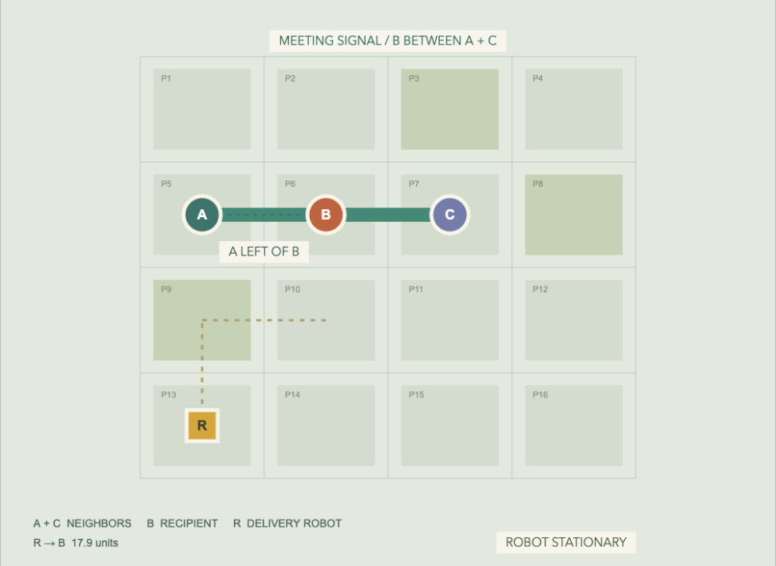
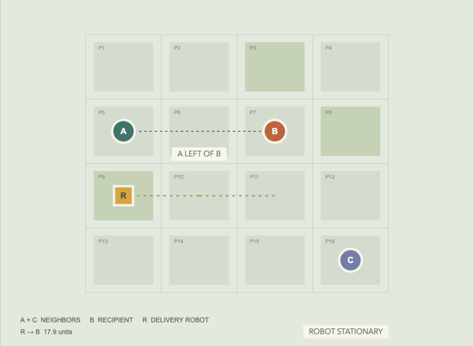
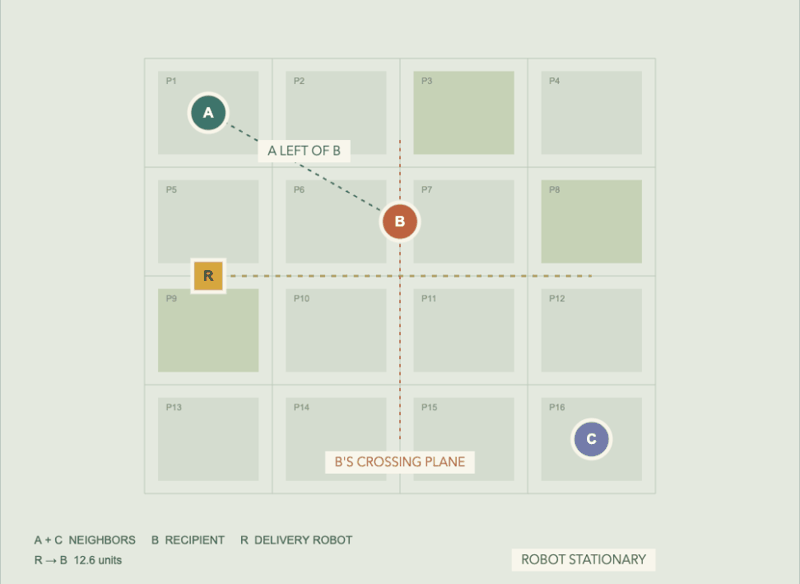

NEIGHBORHOOD / STUDY 03
Where becomes what happens.
Nicole Lu
Spatial AI + Computing · November 2026

A plan view of the existing 16-parcel location system.
A is left of B when xA < xB. A dashed line and label identify the relationship.
B lies strictly inside segment AC, on the same line. A green band connects the three occupants.
R and B occupy neighboring orthogonal locations, 8 units apart. No occupiable parcel location lies between them.
Model assumptions: +x points right, +z points down. Diagonal locations are not adjacent. Empty intermediate locations still prevent adjacency. Units are schematic.
When B is between A and C, the system draws a green meeting band and displays a shared signal.
This is a response to the configuration of multiple objects.
Move B up one parcel: the “between” condition becomes false and the signal disappears. Move B down again to restore it.
Open scene 01. Expand “Move an object,” choose B, press up, then down. The signal is continuously derived from positions.
The robot approaches B and stops on the neighboring parcel. Adjacency triggers a handoff.
The amber connection marks the relationship. “Parcel delivered” records the action once per reset.
An intrinsic capability: the robot can deliver; ordinary neighbors cannot. The delivery record persists if the robot moves away.

Toward: distance to B decreases between samples.
Past: the robot crosses B’s perpendicular plane in its travel direction, within 4 units laterally.
Away: distance to B increases between samples.
Direction labels describe the latest movement interval. “Past” is a recorded event. The path is abstract movement, not a computed street route.

Positions produce live conditions. Comparing positions over time produces movement events.
A meeting follows the current arrangement. A completed delivery and a past crossing remain recorded until reset.
Run the three-scene demonstration ↗
Try a diagonal placement, move B out of line, or pause the robot. These boundary cases make each rule inspectable.
Reused the 16 parcel locations and 8-unit spacing. Added movable occupants, relationship predicates, triggered actions, and sampled paths.
Two-dimensional plan; no collision avoidance. Travel is illustrative, and units do not represent measured meters.
Brief: William Martin, “Spatial AI + Computing: Position + Movement,” pp. 4–8. Implemented with AI assistance; rules and source are available for inspection.